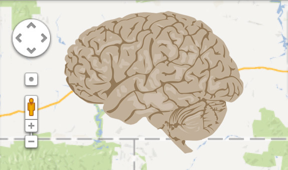

Jeff Hawkins•Founder
Jeff Hawkins•Founder
Last month the Obama administration announced a new ten year $3B science initiative called the “Brain Activity Map Project” (BAM). The ultimate goal is to map all the connections in the brain and simultaneously record the activity of all the brain’s neurons.
What will BAM do for those of us interested in understanding how the brain works and building intelligent machines?
The fact that brain research is national news promoted by the U.S. President is great. Reverse engineering the brain is arguably the most important scientific challenge of all time and one we are close to solving. History will mark humanity in two epochs, before and after understanding how brains work, or before and after machine intelligence. National focus and money on this important problem makes sense and will accelerate progress.

BAM is modeled after the Human Genome Project. This was a decade long federally funded effort to map the genome. It was a success. But mapping the brain’s activities is not a singular thing like mapping the human genome. People don’t agree on what it means to map the brain or what success looks like. At the moment it isn’t clear exactly what BAM will try to achieve. Regardless, we can be confident that the BAM initiative will accelerate our understanding of brains. But there are several ways this can go.
The NIH (National Institutes of Health) will likely to do most of the funding for BAM as it did for the Human Genome Project. Since the NIH focuses almost exclusively on diseases, BAM research will be pushed in directions that may not be best for reverse engineering the brain and building intelligent machines. For example, there is a split in the neuroscience world between scientists who study relatively simple nervous systems (such as worms and slugs) and those who study the neocortex which is what makes humans intelligent. The BAM initiative has stated they will start with invertebrates. Understanding invertebrate nervous systems may lead to a better understanding of how brains grow or how neurons work and fail, but it is less likely to lead to a better understanding of intelligence. For that you have to study the neocortex which only exists in mammals.
On the other hand, DARPA (the Defense Advanced Research Projects Administration) is also part of BAM. DARPA is interested in machine intelligence and robotics. BAM dollars that get allocated through DARPA are more likely to advance our understanding of intelligence and more likely to lead to advances in practical hardware for machine intelligence.
National research agendas such as BAM sometimes don’t succeed. In the 1980’s Japan created the Fifth Generation Computer Systems Project, a bold plan to leapfrog the rest of the world in computer science and artificial intelligence. It failed despite concerted effort and hundreds of millions of dollars of funding. Will BAM be a success like the Human Genome Project or a failure like the Fifth Generation Computer Systems Project? Will BAM accelerate brain theory and machine intelligence or just lead to better understanding of disease? It is too early to answer these questions. It depends on what goals are chosen and who allocates the funds.
I am optimistic that good things will emerge from BAM but I don’t expect it will achieve the stated goals. Mapping the human genome is a far easier problem than recording from and mapping every neuron in a brain. Mapping the genome is like reading letters on a very long tape. You can make millions of copies of the tape and divide up the mapping task among thousands of tape reading machines. Mapping a brain is like finding the personal relationships of every human on Earth and keeping track of what each person is doing at every moment in time. The size of the problem is daunting but the biggest difficulty is that the connections between neurons, like our relationships, are unique and constantly changing. When it comes to the human neocortex, there is no singular map. We can take analogies like this only so far, my point is that mapping the human brain is qualitatively harder than mapping the genome. Even if BAM does succeed, a complete map of a brain is not going to tell us how it works or what causes mental diseases.
The activity and connection maps envisioned by BAM will be useful, but brain theorists today are not lacking in empirical data. We haven’t come close to understanding the tremendous amount of data we already have. If we want to understand how brains work, then a better direction is to focus on brain theory, not brain mapping. We should set goals for brain theory and goals for machine intelligence tasks based on those theories. That is what we do at Numenta. For example, we set goals to understand how neurons in the neocortex form sparse distributed representations and then how they learn to predict future events. This resulted in Hierarchical Temporal Memory (HTM) which is the heart of our Grok streaming prediction engine. The next big theoretical challenge we are working on is how the cortex generates behaviors from predictions, what is sometimes called the sensory-motor integration problem.
Those of us who are interested in brain theory and machine intelligence should be happy about BAM regardless of how it plays out. But we shouldn’t rely on it to advance brain theory or machine intelligence any time soon. I am working on a set of brain theory goals that will accelerate progress in machine intelligence. I hope to discuss these in a future blog post.
Jeff Hawkins•Founder